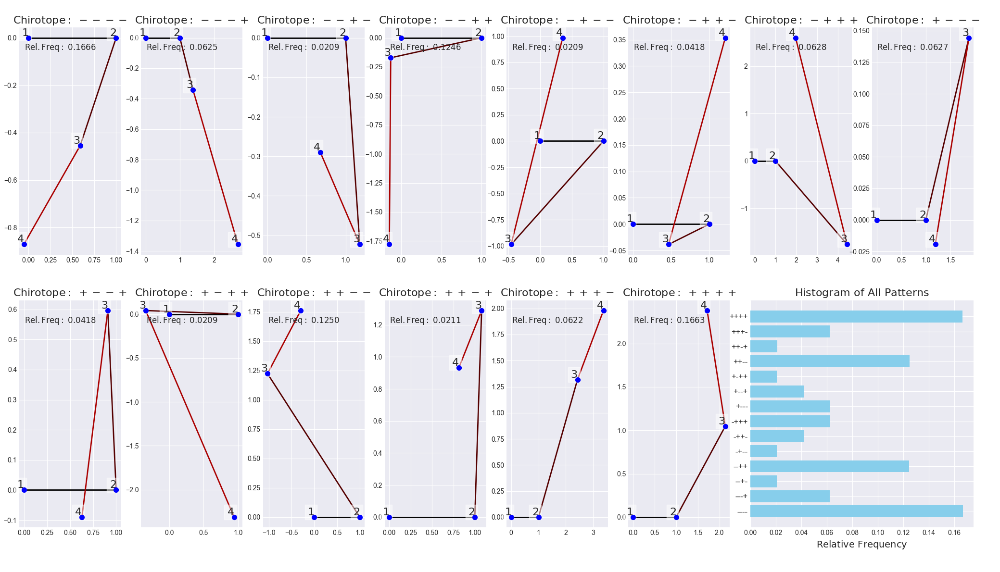

Counting permutation and chirotope patterns: algorithms, algebra, and applications

Fig.1 - Random realizations of all acyclic, realizable, non-degenerate, rank-2 chirotopes of size four.
The key objectives of this project are to:
- Develop algorithms and algebraic structures to efficiently count permutation
and higher-dimensional chirotope patterns. Identify subclasses of patterns that
can be counted efficiently.
- Develop a notion of entropy based on chirotope patterns to analyze the
complexity of multidimensional time series.
- Introduce cumulants of permutation and chirotope patterns and study their
properties and applications in statistics.
- Establish connections between counting patterns, dynamic programming,
multiparameter integrals and (crossed modules of) Hopf algebras.
The project is funded by the German Research Foundation (DFG) and runs from 2024 to 2027.
It is part of the DFG priority programme SPP 2458 "Combinatorial Synergies".
home